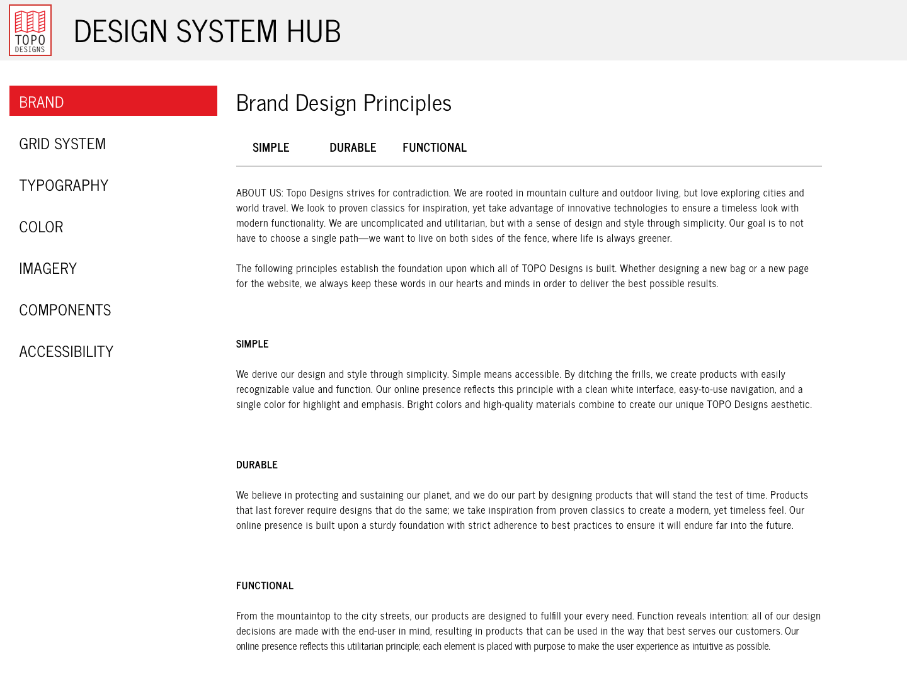
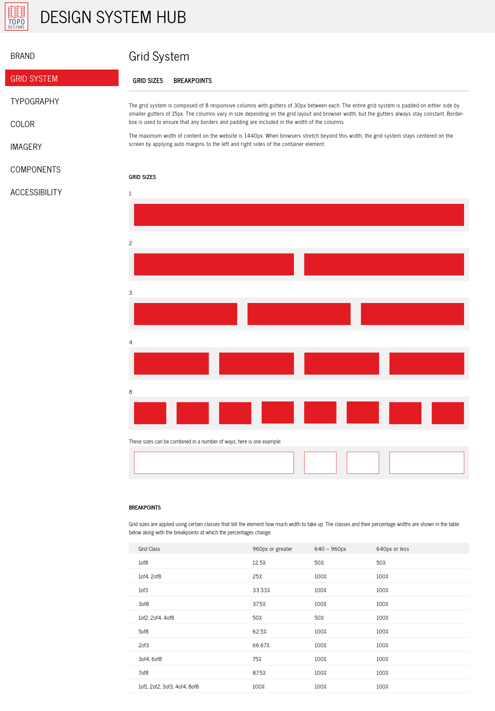
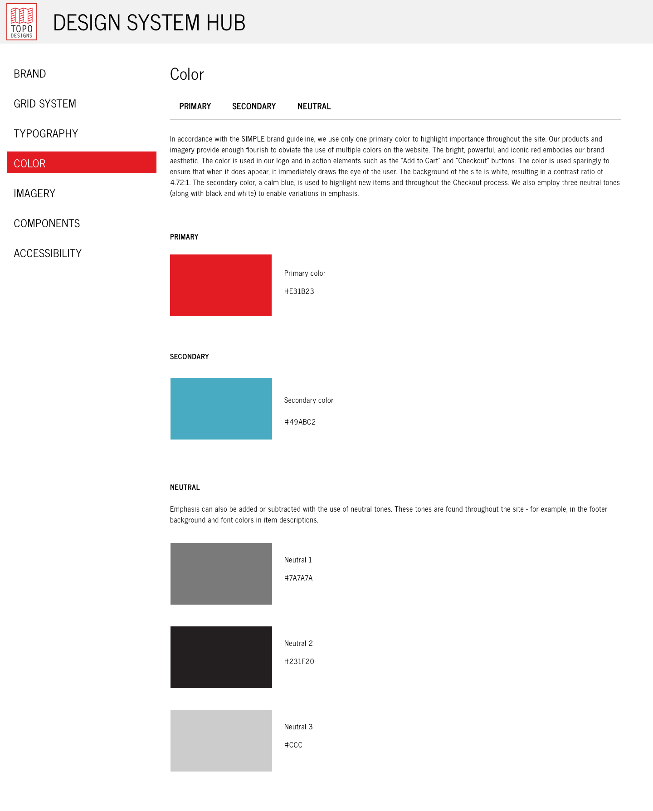

nicktobat / branding / topo
TOPO Designs
Outdoor Bags & Apparel
The Ask VCU Brandcenter
I was tasked with creating a comprehensive Design System for an outdoor bag & apparel company based in Colorado. The system includes design principles, grid layout, typography, color palette, imagery, digital components, and accessibility guidelines.
The Process
The system was developed by mixing styles on the existing TOPO website with original ideas.
TOOLS: Sketch + InVision
The Result
An interactive prototype of the Design System can be found here.



